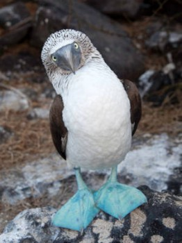

Sunday, August the 3rd, 2014
back to: title, date or indexes
I have been thinking, as I sometimes do, about the ineradicable stupidity of certain animals. These thoughts were prompted, today, by the newsagent's cat. It really is a bewilderingly stupid cat. I then found myself pondering the blue-footed booby, a bird which gives the impression of being as witless as any cat. The newsagent does not have a pet booby, alas, so I had to make do with examining pictures.

A blue-footed booby. You already know what a cat looks like.
I then began to wonder which one is the more stupid, the cat or the booby. Surely the best way to find out would be to pit one against the other in a (lack of) intelligence test—a “brain-off” between the newsagent's cat and a blue-footed booby. Unfortunately, it was at this point that I learned—by consulting my copy of Dobson's Bumper Book Of Facts About Things The Lower Extremities Of Which Are Blue (out of print)—that the blue-footed booby is not native to these shores. Apparently they are to be found from the Gulf of California down along the western coasts of Central and South America to Peru.
The wonders of space age technology mean that their far distant habitat need not deter me. All I need is for a Hooting Yard reader resident in that part of the world to get hold of a blue-footed booby and stick it in front of a computer. I will do likewise with the newsagent's cat, and we can link up using Skype. We can then subject them to a series of tests, the one against the other, cat versus booby, to determine which one is the thickest.
I will post an account of the contest, and its results, as soon as we have managed to conduct it.
Hooting Yard on the Air, September the 18th, 2014 : “Captain Nitty's Lung Collapses” (starts around 13:05)